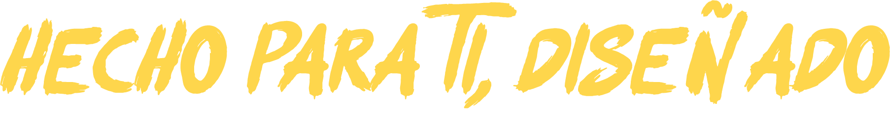
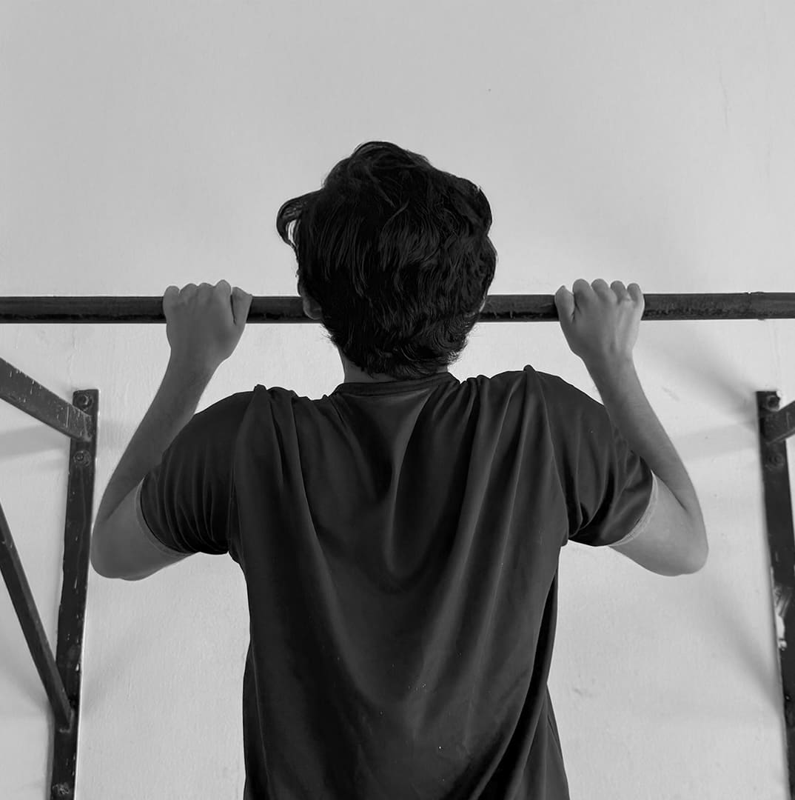
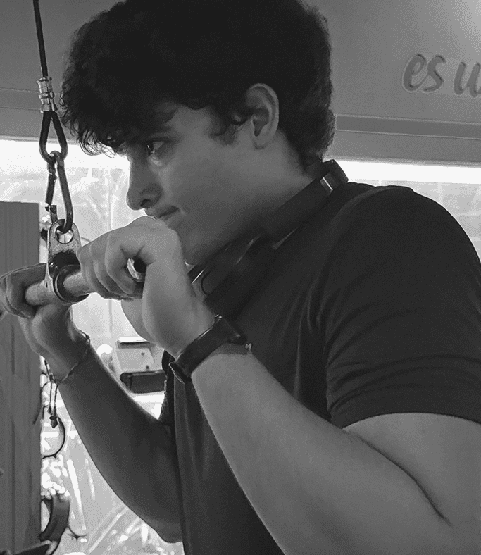
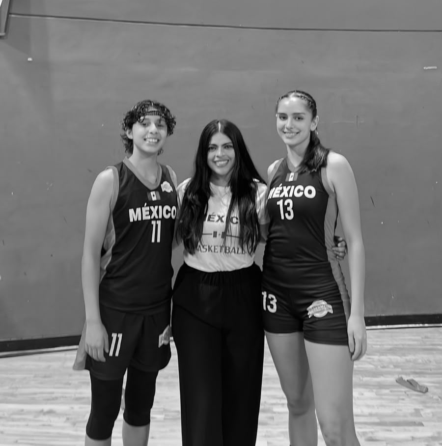
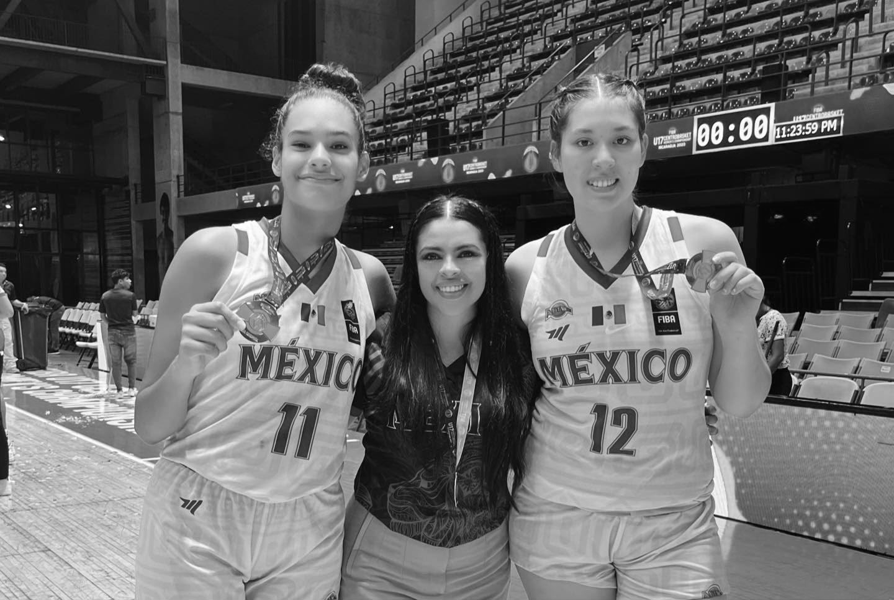
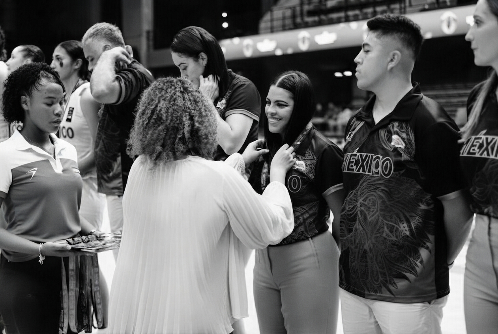

AtlanMotion es una página web diseñada para jóvenes adultos que buscan mejorar su salud física. Ofrece rutinas de ejercicio, retos semanales y planes personalizados, todo presentado con un diseño dinámico y accesible que motiva al usuario a mantenerse activo y constante en su progreso.
El sedentarismo es la falta de actividad física regular en el día a día, ya sea por trabajo, estudio o rutinas de vida poco activas. Según la Organización Mundial de la Salud, es uno de los principales factores de riesgo para el desarrollo de enfermedades cardiovasculares, obesidad y otros problemas de salud.
En AtlanMotion creemos que incorporar pequeños hábitos de movimiento constante puede marcar una gran diferencia: nuestras rutinas están pensadas para que, sin importar tu punto de partida, encuentres una forma accesible de dejar el sedentarismo atrás y empezar a moverte hacia una vida más activa.
Enfatizar el entrenamiento funcional como herramienta para la independencia física y emocional.
Ser una plataforma referente en entrenamiento funcional que inspire a las personas a transformar su bienestar físico y emocional, promoviendo un estilo de vida activo, resiliente y con propósito.
Incorporamos el concepto de "fuerza con propósito" como eje central de nuestra visión del ejercicio. No se trata solo de desarrollar músculos o alcanzar metas estéticas, sino de construir una fortaleza integral que impacte positivamente en la vida cotidiana.
Cada entrenamiento está pensado para mejorar la autonomía, la confianza y la resiliencia, ayudando a las personas a enfrentar desafíos físicos, mentales y emocionales con mayor seguridad y determinación. Creemos que el ejercicio es una herramienta para transformar no solo el cuerpo, sino también la actitud con la que se vive.
En AtlanMotion, no creemos en héroes, creemos en humanos. En músculos que sirven para cargar sueños, no solo pesos. En rutinas que preparan para la vida, no para el espejo. En tecnología que mide progresos, no perfección.
Aquí no hay dioses del Olimpo, hay personas que eligen ser su propia versión más fuerte. Porque la verdadera fuerza no está en levantar montañas, sino en construir la resistencia para escalar las tuyas. Únete. Tu mito empieza aquí.

"Nuestro propósito es fortalecer el cuerpo y la mente, motivando a cada persona a superarse día a día."

Cada rutina, cada reto, cada paso está pensado para que alcances tu mejor versión.

Únete a una comunidad que te impulsa a dar el siguiente paso cada día.

Cada paso cuenta en tu camino hacia una vida más fuerte y activa.

Fortalécete con propósito para alcanzar tu independencia integral.